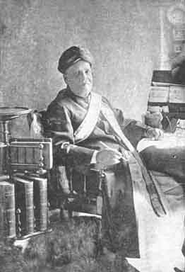

An Andhra Statesman
In the Far South
BY N. KRISHNAMURTI

Dewan Bahadur V. Nigam Aiya
Dec. 1850-May 1917.
Poverty is rich in stimuli. Its beneficent powers lie in riotous profusion all around its beneficiaries as the fertilities of mother earth lie scattered about the mighty oak in primeval forests. Otherwise is it with those who come out with silver spoons in their mouths. The subject of this memoir was born of poor parents, literally poor. Ancestors unknown had left their ancient home1 in the Andhradesa and come as far south as Tinnevelly. Nagam Aiya was the fourth of a family of five children born to a pious couple of Telugu Aruvela Niyogi Brahmins whose stock of racial pride was all that was left to them through the vicissitudes of migratory living. Four years later, another boy was added to the family, and circumstance which it will take too long to narrate here sent these, roving again for shelter, to the shrine of Sri Padmanabha. That was perhaps the stroke of destiny. The young arrival duly went to school and to college too. And in 1870 H.H. the Maharaja's College sent up its first batch for the B. A., and Nagam Aiya earned the distinction of being the first graduate from His Highness’ college. As his old professor of revered memory, Dr. Harvey, wrote to him on his appointment as Acting Dewan– "I must congratulate you on being our first Dewan as well as our first B.A." But poverty had not smoothed the way to a degree. For after matriculating he had to seek a job to help keep the pot boiling, and studies and breadwinning in a lowly capacity went hand in hand. But the lowly job ere the degree came had been changed for the privileged one of Assistant Professor of History and Mathematics in his own college. With passing the B. A., the young man was marked out for preferment, and was at once drafted to the Dewan's English Office, as it then was, by Raja Sir Madhava Rao.
His rise was rapid. He was appointed a Tahsildar in 1872, then Superintendent of Census in 1875, and wrote the first Census Report of Travancore in 1876. Kottayam marveled at its ‘Boy-Tahsildar’ as he was spoken of, whose official duties no more oppressed him than games a schoolboy, but who at the same time laid the foundation of those qualities which distinguished his later career. The Census work turned all eyes to the young officer, who, to quote the words of the official review by the Dewan, "in the Course of executing the work entrusted to him has displayed superior intelligence, great tact for organising, instructing and controlling a large and special agency which the necessities of the work called for". Passing through the appointments of Police Sheristadar and Marahmut Sheristadar in the Huzur, he found himself by the time he was barely thirty called upon to fill the place of Dewan Peishkar and District Magistrate of the Padmanabhapuram Division, the highest executive office in the State under the Dewan. The Peishkar was a Ma Bap then, and Nagam Aiya held the office in three out of the four Divisions and left everywhere indelible marks of the benevolent autocrat who did everything to promote the fundamental well-being of the people under his charge. The Dewan was gratified to observe contentment pervading the bulk of the people in your Division". His Sovereign was pleased to write to him- "Nothing could be more gratifying to me than to hear that the division under your charge is in such a prosperous condition. I know you are sparing no pains in making the administration alike popular and beneficent to Government." From the charge of the Division it was in his day; a promotion to be appointed to the charge of the Settlement operations then in progress, The Settlement Dewan Peishkar had just become Dewan. The next senior officer so stepped into his place, and Nagam Aiya filled it for twelve years animated by one principle, "light taxes and large revenues". He believed in the noble maxim that money was more fruitful in the hands of the people than in the privy coffers of the Sate.
Throughout this long period he laboured under the disadvantage of strong differences with successive Dewans both on policy and on methods. The Dewans were the victims of pressure from the Madras Government whose views in the direction of rates of assessment and speedy settlement conflicted with Nagam Aiya's essentially. Matters came to a head with the coming into the Dewanship of Mr. V. P. Madhava Rao, and at a series of Settlement Conferences, strong differences strong]y expressed led to a situation calling for a decisive step. His Highness thought– "let the Dewan go on with his scheme, let Nagam Aiya now take up the writing of the State Manual which work had officially been entrusted to him even during the Dewanship of Rama Rao". Whether as Settlement Officer or as Dewan Peishkar on Special Duty for the State Manual, Nagam Aiya had reached the step just below the Dewanship, and speculators and wags, in the press and elsewhere, were conning the chances for and against him. Dewan Krishnaswami Rao went to the Delhi Durbar of January 1903 with His Highness, and for the first time Nagam Aiya was Acting Dewan. "I have no doubt that this is a sure indication of what is in store for you at a date not far off." So wrote the Dewan himself. The chorus of congratulation on the appointment and appreciation of his temporary administration were crowned by the terms in which his Sovereign-master acknowledged his work. His Highness wrote:– "I have often thought of writing to you after my return from my trip to Delhi last year to express my high appreciation and satisfaction of your work when you were in charge of the administration during my absence from Travancore for more than six weeks. I know what difficulties and troubles you had to overcome but you worked with your wonted zeal and energy and carried on the duties of the administration to my entire satisfaction. I have much pleasure therefore in placing you again in charge of the administration. It is needless for me to express the high opinion I have always entertained of your integrity and abilities. I have every confidence that you will afford me the same satisfaction whenever you are placed in charge of the administration."
But the fair weather which had so far carried him along the high seas of success and achievement now deserted him. The goal was in sight but unattainable. He may hold charge of the Travancore Administration, and he did on five occasions, but he may not be Dewan pucca. So the career which opened on a note of ample promise, and which for 42 years kept Nagam Aiya poised on rising pitches of success and fame, broke at last on a note of tragedy. Contemporaries, friends, foes, have variously explained this dismal trick of fate. But the truth lies hidden in the labyrinthine meshes of political practice which coil round kings and governments, and the story may therefore, perhaps, be never told. Or it may be. The time is not yet, perhaps, nor is this the place. But those who know, know too that neither Nagam Aiya nor those whose affections, hopes and admiration gathered round him, had just cause to say–‘He missed the Dewanship, and he did not deserve it; his Maharaja did not care for him, and would not have him’.
With the Census Report of 1876, Nagam Aiya revealed the talent that lay in him for authorship. He then discovered himself to be for at least another thirty years the official spokesman of Travancore. The Census Reports of 1881 and 1891 established his pre-eminent literary gifts. His Government in recognition of the Census work not only recorded in formal terms high appreciation but also bestowed an honorarium of Rs. 2,000. A further gift of the value of Rs. 2,500 followed when after sixteen years Nagam Aiya made his last official publication, the three splendid volumes of the Travancore State Manual, in 1907. The work which was acclaimed as his magnum, opus brought him such a chorus of praise and congratulation; it was a fitting conclusion to his career as publicist for his Government, and one which in the words of a British Resident addressed to the Maharaja, "will serve for all time as a memorial of Your Highness’ reign in Travancore"; and to Nagam Aiya wrote the same authority– "I congratulate you on this lasting memorial of your connection with the State’. Space here does not allow of further extracts from a pile of enthusiastic appreciation, nor of a fuller account of the other numerous literary activities which embellished his career. Suffice it to say that for the press and for the platform, he was ever in demand, and people's memories enshrine the warmth and vivid charm and dignity of his personality, his mellifluous voice and silvery laughter, his lively sense of humour and finished diction. His broad outlook prevented his taking a parochial view of things, and to Indian politics he gave as anxious a study as to problems that lay close around, and he was a regular writer to the columns of The Hindu. He was of no party. A Brahmin of Brahmins, his best friends were drawn from among Nairs, his other non-caste brethren, from Christians and Mohammedans. His writings testify to this, and memories of him are fragrant with this unbigoted and warm-hearted trait in him. Conscious of his own high birth and opportunity, he was alike conscious that everyone else had a right to a place under the sun.
He was spared to spend ten years after retirement from office, which time he filled with congenial literary pursuits, with visits to important towns in his own Presidency, with unfailing regularity in Tennis and Billiards, with the dispensation of gracious hospitality, while himself the recipient of his Maharaja's unabated confidence and regard, to whom he paid his customary two visits a week, the unexpected recipient too of the title of "Dewan Bahadur" from the Viceroy which all friends said was "somewhat belated, but in no case was better deserved", "so tardily conferred by the British Government", and so on, until in May 1917 the end came with a suddenness so becoming the justly proud and the truly noble. Such must die standing; it was almost so in his case. A slight stomach trouble took a quick serious turn without warning, and on the third day morning the world heard of him as no more.
Life's race well run,
Life's Work well done,
Life's crown well won,
Now Comes rest.
1
The village of Boppudi, (Narasaraopet Taluk, Guntur District), where representatives of the family may still be found.